■元のページへ戻る
■元のページへ戻る
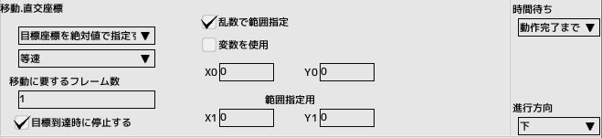
直交座標
移動先の指定をXY座標で指定します
もしくは
移動力の指定をXYで指定します
- 移動先指定
- 目標座標を絶対値で指定する
移動先の座標を絶対座標で指定します。画面の左上が(0,0)のポイントになります
- 目標座標を相対値で指定する
移動先の座標を現在座標からの相対座標で指定します。正の数なら右下、負の数なら左上方向になります
- 移動力を絶対値で指定する
XY方向の移動力を絶対値指定します
- 移動力を相対値で指定する
XY方向の移動力を指定します
- 移動計算式
座標指定時に限り有効になります
- 等速
目標地点まで等速で移動します
- 加速、急加速
開始地点より加速しながら移動します
- 減速、急減速
目標地点に近づくと減速しながら移動します
- 加減速、急加減速
加速と減速の両方しながら移動します
- 移動に要するフレーム数
目標座標まで到達する時間をフレーム数で指定します、最短で１フレームかかります
- 乱数で範囲指定
移動先の座標、もしくは移動力を範囲指定します
- 変数を使用
座標や移動力の指定に変数を使用します
目標座標を指定する場合、目標へ到達後もそれまでの移動速度はキープされます
停止させるには「目標到達時に停止する」にチェックを入れます
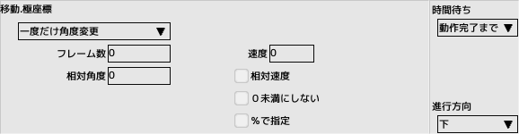
極座標
移動する向きと速度を変更します
- 一度だけ角度変更
現在の進行方向へ指定角度を最初のフレームのみ加算します
- 毎フレーム角度変更
現在の進行方向へ指定角度を全てのフレームで加算します
- フレーム数
指定したフレーム数だけ移動を継続します
- 相対角度
変更する角度を相対値で指定します
- 速度
相対にチェックが入っている場合は相対速度、入っていない場合は絶対速度を指定します
- 0未満にしない
速度が0未満になるときは0にします
- %で指定
速度を現在値から割合で変化させます
移動先へ到達後もそれまでの移動速度はキープされます
停止させるには後述の停止パネルを使用してください
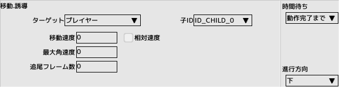
誘導
ターゲットに向かって移動するように方向を修正します
ターゲットが存在しない場合、即座に完了します
- ターゲット
誘導対象となるキャラクタを指定
- 移動速度
相対にチェックが入っている場合は相対速度、入っていない場合は絶対速度を指定します
速度パネルが動作中はそちらの速度が優先されます
- 最大角速度
角速度とは回転する速度のことです。1フレームに回転できる最大値を指定します
角度を100倍した値で指定します（50を指定すると１フレームあたり0.5度まで角度修正が行われます）
- 追尾フレーム数
追尾を実行するフレーム数を指定します。指定フレーム経過後は直進します
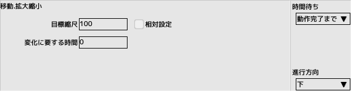
拡大縮小
縮尺を変更します
- 目標縮尺
等倍を100とした倍率で指定します。200なら2倍、50なら0.5倍になります。相対設定にチェックを入れると、現在の縮尺に乗算されます
- 変化に要する時間
縮尺の変更が完了するまでの時間をフレーム数で指定します
- 等速
目標値まで等速で変化します
- 加速、急加速
開始値より加速しながら変化します
- 減速、急減速
目標値に近づくと減速しながら変化します
- 加減速、急加減速
加速と減速の両方しながら変化します
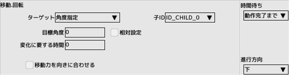
回転
ターゲットに向かって回転します
- ターゲット
- 角度指定
指定した角度に向かって方向を修正します
- プレイヤー
プレイヤーに向かって方向を修正します
- 親
親が存在する場合に親に向かって方向を修正します
- 子
子IDを指定してください
- 目標角度
角度指定の場合の目標角度を絶対値、もしくは相対値で指定します
- 変化に要する時間
回転の変更が完了するまでの時間をフレーム数で指定します
- 移動力を向きに合わせる
回転した方向に移動します
- 等速
目標値まで等速で変化します
- 加速、急加速
開始値より加速しながら変化します
- 減速、急減速
目標値に近づくと減速しながら変化します
- 加減速、急加減速
加速と減速の両方しながら変化します
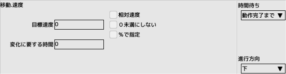
速度
移動速度を修正します
- 目標速度
相対にチェックが入っている場合は相対速度、入っていない場合は絶対速度を指定します
- 0未満にしない
速度が0未満になるときは0にします
- %で指定
速度を現在値から割合で変化させます
- 変化に要する時間
速度の変更が完了するまでの時間をフレーム数で指定します
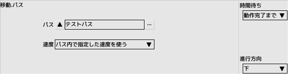
パス
指定されたパスを実行します。パス編集を参照してください
パスを移動する速度
- パス内で指定した速度を使う
パス編集での指定速度が有効になります
- スクリプトで制御する(一時停止も無視)
制御パネル「パス速度」で制御します
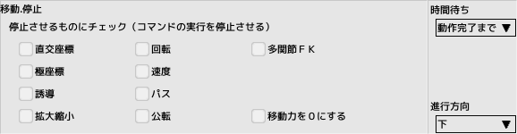
停止
- チェックボックス
チェックした移動パネルの動作を停止させます
- 移動力を0にする
パネルが停止しても移動力は残ったままなので、移動停止させたい時はチェックしてください
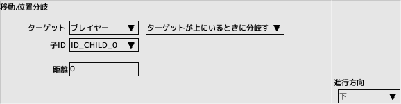
位置分岐
ターゲットとの位置関係で分岐します
- ターゲット
対象を指定
- 子ID
ターゲットが子の時に指定します
- 条件
ターゲットとの位置関係を選択します
- 距離
条件が「距離以下」の時に指定します
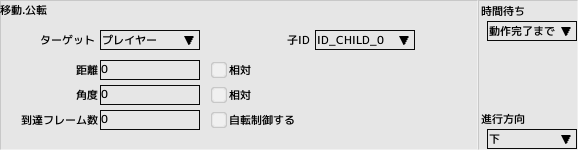
公転
ターゲットの周囲を回転するように移動します
ただし真円を描くわけではなく、ターゲットの移動等で歪な円を描くことがあります
- ターゲット
対象を指定
- 子ID
ターゲットが子の時に指定します
- 距離
ターゲットとの距離を指定します
- 角度
ターゲットとの角度を指定します
- 到達フレーム数
指定された位置への移動が完了するまでの時間をフレーム数で指定します
- 自転制御する
公転に合うように向きを制御します
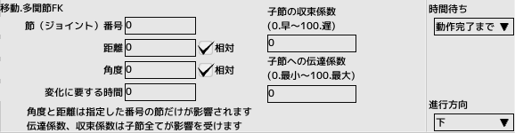
多関節FK
多関節が有効でかつ制御方式が「FK」を指定している時のみ有効です
節(ジョイント)を一つだけ指定して距離と角度を変更できます
さらに子節へ距離、角度を減衰させながら伝えることができます
- 節(ジョイント)番号
キャラクタ編集の多関節タブ、節リスト内番号
- 距離
節の距離を指定。相対、もしくは絶対値
- 角度
節の角度を指定。相対、もしくは絶対値
- 変化に要する時間
指定された距離角度のy変更が完了するまでの時間をフレーム数で指定します
- 子節の収束係数
大きくすると親が停止しても子が停止するまでの時間が長くなります
- 子節への伝達係数
大きくすると親の影響を強く受けます
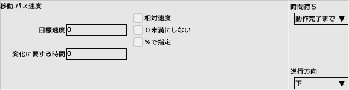
パス速度
パス移動速度を修正します
制御パネル「パス」でスクリプト制御するを選択時のみ有効です
- 目標速度
相対にチェックが入っている場合は相対速度、入っていない場合は絶対速度を指定します
- 0未満にしない
速度が0未満になるときは0にします
- %で指定
速度を現在値から割合で変化させます
- 変化に要する時間
速度の変更が完了するまでの時間をフレーム数で指定します
■ページ上部へ戻る